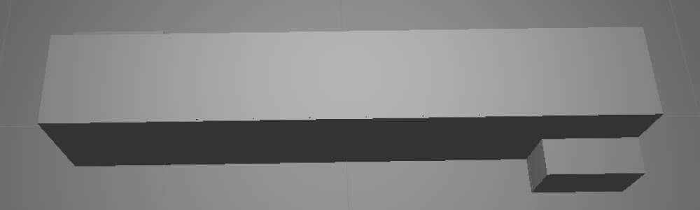
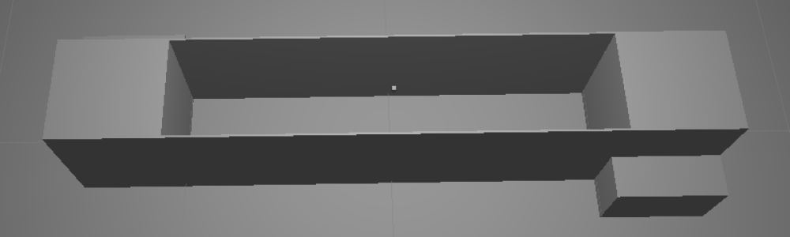

atmoicubes
Objects created from cubes which appear when approached.
1 - Abstract
Entities in a game world are typically created with a solid mesh that is always visible. One example of this is a bridge which consists of a singular hexahedral mesh stretched over a chasm along one of its axes. This need not be the only way to represent objects though. By creating the mesh but not rendering it, the object can still participate in physics while letting another object can stand in, visually. We will explore this concept by creating a bridge in Unity as described above but replacing the visible part of the mesh with an array of cubes which form platforms beneath objects as they are approached.
2 - Methodology
To create the atomicube-bridge a false-bridge was first created. This false-bridge consisted of two parallel walls of the same length, width and height. Additionally, the line which traveled through the starting point of each wall was perpendicular with the walls themselves, in other words: the starting points and ending points were aligned. Two steps led to the top of these walls, allowing a player to reach the top of the bridge. Between the walls a hexahedron filled the space creating a platform which the player could walk across. Figure 1, below, details this setup.
|  |
|
Figure 1: The false-bridge
|
With the false-bridge in place, the atomicube-bridge could easily be created from it. First the hexahedron filling the top of the bridge was made invisible by removing its MeshRenderer. After this two cubes were created and attached to the same transform, we will call this the cube-transform. One of the cubes then had its MeshRenderer removed. After this the cube-transform was scaled, deactivated and placed in the center of the hexahedron. Figure 2, below, shows what the setup looked like at this point.
|  |
|
Figure 2: The cube-bridge
|
Now, all that remained was creating the cube lattice to fill the bridge and getting the cubes to fly in. Instead of creating more cubes in the Unity editor, a script was applied to the hexahedron which cloned the cube-transform and placed the clones in a lattice. This script will be described in the following section, Code. Figure 3, below, shows the setup with the cube-lattice.
|
Figure 3: The cube-lattice bridge
|
At this point cube-lattice bridge was finished but the cubes had not yet been arranged to fly in. This was done with the use of another script which translated the rendered part of the cube-transforms according to parametric equations when the non-rendered parts entered a trigger. This script will be described in the following section, Code. After the script was applied the cube-lattice bridge was finished. Figure 4, below, shows the final result.
|
Figure 4: The complete cube-lattice bridge
|
3 - Code
The cube-lattice bridge can be implemented with a minimal amount of code. Indeed, some of the scripts used within our particular implementation of the bridge were included to simplify tasks which would be unpleasant to perform with the unity editor. What this means that is that our implementation could have required even less code. Nonetheless, these scripts, as well as any others which might be of interest to someone attempting to implement their own cube-lattice bridge, will be described here. The classes subsection, below, will provide a listing of the classes created and their descriptions. The computation subsection, which follows the classes subsection, will provide a description of how all of these classes interact at an architectural level.
3.1 - Classes
3.1.1 - LatticeGenerator
The lattice generator class is a Unity script which simply generates an x by y by z lattice on start. Parameters can be given for the minimum and maximum values of x, y and z as well as the steps to take when incrementing from minimum to maximum along one of these axes. A game object must also be provided to serve as the “building blocks” of the lattice. Essentially, this object will just be copied throughout the lattice according to the input parameters. It should be noted that the objects will be positioned in local space and its transform will be a child of the lattice.
3.1.2 - Accumulator
An accumulator may be used to count time as it passes between frames. The accumulator is created with a reset value and a rate. Methods may be called on the accumulator which specify whether the accumulated value will be incremented, decremented or remain the same each frame. When incrementing or decrementing, the delta time of the frame will be multiplied by the rate before being applied to the total.
3.1.3 - ParametricEquation3d
This abstract script implies the existence of a method, “Execute”, which takes a float as a parameter and returns a vector3.
3.1.4 - ParametricLerp3d
This class fulfills the ParametricEquation3d abstract class. This class provides properties which allow a starting and ending vector to be specified and an execute method which linearly interpolates between them.
3.1.5 - ParametricBackForthMovement
This Unity script uses a ParametricEquation3d and Accumulator on its parent entity to move the entity by its localPosition. It supplies the methods “BeginMovingForwards” and “BeginMovingBackwards”. A minimum and maximum value for the input to the parametric equation can be supplied. These are used as the bounds of the accumulator; the accumulator will not accumulate past these points, allowing the entity to rest.
3.1.6 - ParametricMoveOtherOnCollision
This Unity script causes the ParametricBackForthMovement to begin moving another entity forward when the current entity receives a TriggerEnter and to begin moving the other entity backward when the current entity receives a TriggerExit.
3.2 - Computation
To create the effect of individual cubes flying into and out of space a cube-transform was used which contained a Transform having two Cubes as its child. One of the Cubes had its MeshRenderer removed and was set to a trigger. To this first cube, the ParametricMoveOtherOnCollision script was attached; we will call it the field-cube. The other cube had its CubeCollider removed. To this second cube, the ParametricLerp3d, ParametricBackForthMovement and Accumulator scripts were attached; we will call it the solid-cube. The solid-cube cube was used as the object in the field-cube’s ParametricMoveOtherOnCollision script.
After the cubes were created and transforms and components were properly attached, the solid-cube was translated some distance below the field-cube. A parametric equation was devised which would allow the solid-cube to return to the location of the field-cube when the field-cube encountered a collision. Next, a capsule collider was attached to the player, had its MeshRenderer removed and had a kinematic RigidBody attached. This collider was used for the purposes of triggering the field cube. Finally the cube-transform was placed in a lattice generator which would create cube-transforms along the span of the bridge. This result was that the solid-cubes would appear when the field-cubes entered the player’s capsule.
4 - Results
An atomicube-bridge was constructed as described in the Methodolgy section of this report and the program was run on a test laptop. The only additional features included in the environment were a room, constructed of six planes, and a spherical player which could be controlled with a keyboard. The player was controlled so that it moved across the bridge and the bridge functioned as predicted: cubes appeared as the player approached them. The simulation ran consistently around, but above, 30 FPS. Figure 5, below shoes the player on the bridge.

|
|
Figure 5: The player on the bridge
|
One interesting effect which was unexpected was that when the player jumped, all of the cubes beneath him would disappear and others would appear in the location of the landing. This is the result of a proper implementation but hadn’t been predicted beforehand. Figure 6 and Figure 7, below detail this phenomenon.
|
Figure 6: The player while jumping
|
|
Figure 7: Cubes appearing from below
|